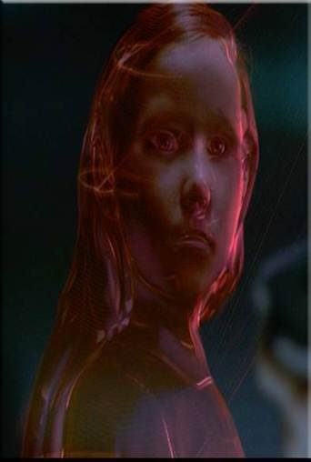
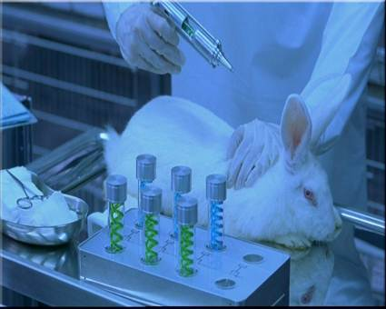
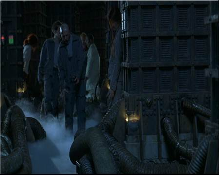
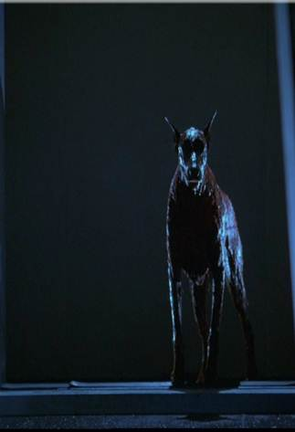
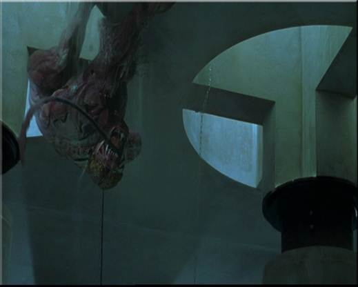

03 — Personajes
Personajes Paralelos

Alice / Alicia
Parecido físico (rubias), ambas entran a un mundo irreal — la Colmena / el País de las Maravillas — con desconcierto, y despiertan de un sueño.
VER MÁS →

La Reina Roja
Homicida que ha matado a todos los que estaban dentro de la Colmena. Paralelo a la Reina de Corazones que manda decapitar a todos en el País de las Maravillas.
VER MÁS →

El Conejo Blanco
En los experimentos de Umbrella aparece un conejo blanco, exacto reflejo del Conejo Blanco de ojos rosados del libro de Lewis Carroll.
VER MÁS →

Zombis / Cartas
Persiguen a Alice por mandato de la Reina. Caminan de forma desganada, y cuando uno cae los demás caen en cadena como naipes.
VER MÁS →

Cancerbero
En su camino por la Colmena, Alice se cruza con un Cancerbero mutante, paralelo al enorme cachorro gigante de Lewis Carroll.
VER MÁS →

Mutantes
Los dibujos animados de Walt Disney juegan con la mutación de la misma forma que los experimentos de Umbrella Corporation.
VER MÁS →